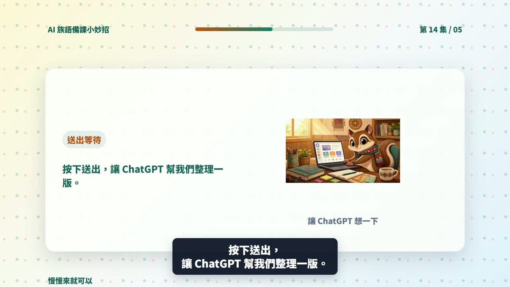

EP014 講義：請 ChatGPT 幫忙整理一堂課的重點回顧
<!-- handout-screenshot:auto -->
講義截圖

圖說：EP014 本集操作畫面截圖，協助老師對照影片步驟與講義內容。
<!-- /handout-screenshot:auto -->
今天只做一件事
下課後花一分鐘記下今天的情況，再請 ChatGPT 整理成一份簡短的重點回顧。下次備課前先看這一份，就不用重新回想上次教到哪裡。
這份回顧是給老師自己接續備課用，不是正式評鑑文件，也不是學生個人紀錄。
需要準備
下課後先記下四件事：
- 今天教了什麼：主題、詞語或文化重點。
- 用了什麼活動：例如快問快答、分組討論或口說練習。
- 全班在哪裡比較順或比較卡：只寫整體情況，不寫學生姓名。
- 下次先做什麼：例如複習第二題，再進入新內容。
不用先寫成完整句子，簡單寫幾個關鍵詞也可以。
步驟 1：先寫下今天的原始紀錄
可以先照這個格式寫：
日期：今天
課程主題：太魯閣族文化
今天教的內容：三個文化重點
使用的活動：三選一快問快答、分組討論
全班整體情況：活動進行順利，第二題較多人答錯
下次要做的事：先複習第二題，再接下一個主題如果不知道怎麼描述學生情況，可以只寫「哪一題較多人答錯」或「哪一個步驟需要再示範」，不必評論學生好不好。
步驟 2：打開 ChatGPT 並貼上提示詞
- 打開 ChatGPT。
- 點一下畫面下方的輸入框。
- 複製並貼上下面這段話。
- 把內容換成今天實際發生的事情。
- 按下送出按鈕，等回答完成。
請把下面的上課紀錄整理成一份簡短、條列式的課堂重點回顧，讓我下次備課前可以快速看懂。
日期：今天
課程主題：太魯閣族文化
今天教的內容：三個文化重點
使用的活動：三選一快問快答、分組討論
全班整體情況：活動進行順利，第二題較多人答錯
下次要做的事：先複習第二題，再接下一個主題
請依照以下四個標題整理：
1. 今天教了什麼
2. 學生做了什麼
3. 哪裡需要再複習
4. 下次上課先做什麼
每個標題最多 3 點，每點只寫 1 句。只使用我提供的事實，不要猜測原因，不要加入學生姓名、個別學生評語或沒有發生的事情。族語與文化內容請保留我提供的寫法；資料不足的地方請標示「請老師補充」。步驟 3：檢查有沒有記錯或漏掉
請把 ChatGPT 的回覆和自己的原始紀錄放在一起看：
- 今天教的內容有沒有寫對。
- 活動名稱和進行方式有沒有被改掉。
- 學生整體反應有沒有被誇大。
- 「較多人答錯」有沒有被錯寫成「學生都不會」。
- 下次要做的事是不是清楚到可以直接開始準備。
- 有沒有漏掉一件會影響下次上課的重要事情。
如果漏了一點，可以接著直接說：
請在「哪裡需要再複習」補上：第二題的文化概念容易混淆，下次先用一個生活例子重新說明。其他內容不要改。請只在這段補充是真實觀察時使用；如果只是猜測，就不要加進回顧。
步驟 4：把回顧改得更好查找
內容太長時，可以接著貼：
請把這份回顧縮短成 8 點以內，每點只保留一個重點，不要新增資訊。下次行動不夠清楚時，可以接著貼：
請把「下次上課先做什麼」改成 3 個可以直接執行的步驟，每一步都要寫明老師要準備或要做的事。步驟 5：存到下次找得到的地方
- 確認內容正確後，按回答旁的複製按鈕。
- 貼到平常使用的備課文件或筆記工具。
- 標題寫上日期和課程主題，例如「2026-07-30 太魯閣族文化課堂回顧」。
- 下次備課時，先打開這份回顧，再決定新的教學內容。
固定使用同一種命名方式，比記得存在哪一個角落更重要。
AI 回覆檢查點
一份可用的課堂回顧，至少要符合這些條件：
- [ ] 有「今天教了什麼、學生做了什麼、哪裡要複習、下次先做什麼」。
- [ ] 每一點簡短，老師可以在一分鐘內看完。
- [ ] 沒有把推測寫成事實，也沒有自行解釋學生答錯的原因。
- [ ] 沒有學生姓名、個別評語或其他可辨識資料。
- [ ] 下次上課的第一個行動很清楚。
- [ ] 族語與文化內容已依正式資料核對。
族語與文化安全提醒
- AI 可能會把不同語別、方言別、部落或文化脈絡混在一起。回顧中的族語拼寫、翻譯和文化說法要依正式資料核對。
- 如果今天談到不適合公開的祭儀、禁忌、家族知識或傳統智慧，只記在合適的校內位置，不要直接貼到公開的 AI 服務。
- 不要請 AI 根據一堂課的表現判斷學生能力、態度或家庭背景。
- 這份回顧只協助下次備課，不代替學校要求的正式教學紀錄、評量或輔導文件。
今日金句
口述今天的課，AI 幫忙記重點；內容是否正確，老師最後確認。
下一步
下次備課前先打開這份回顧，完成「要再複習的地方」後，再開始新的內容。連續使用幾次，就會形成自己看得懂、找得到的備課紀錄。